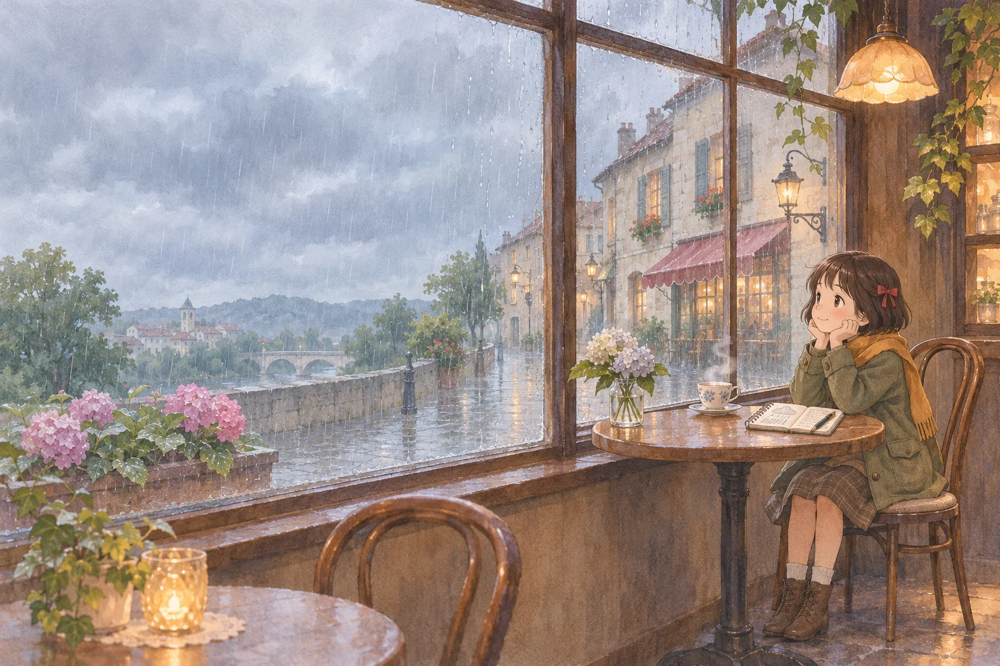
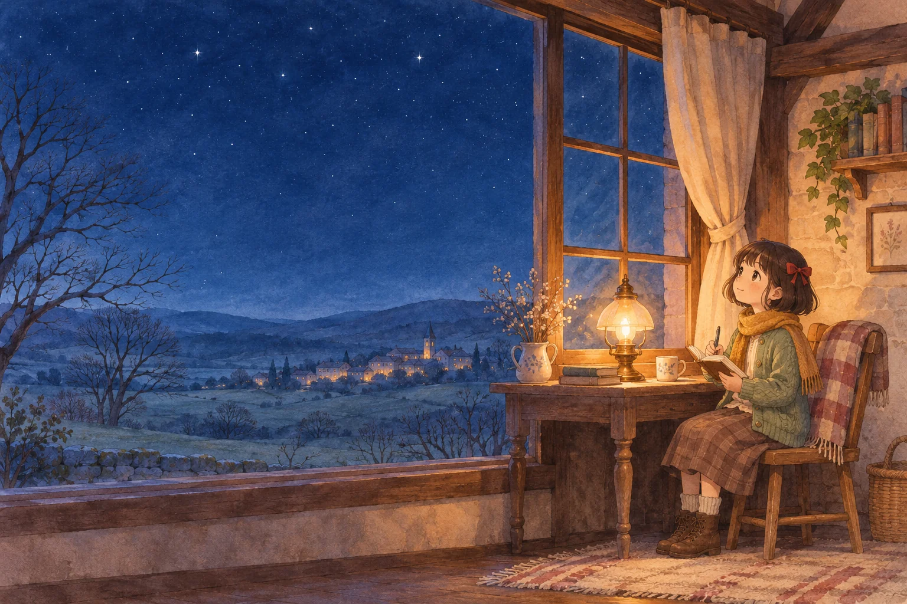
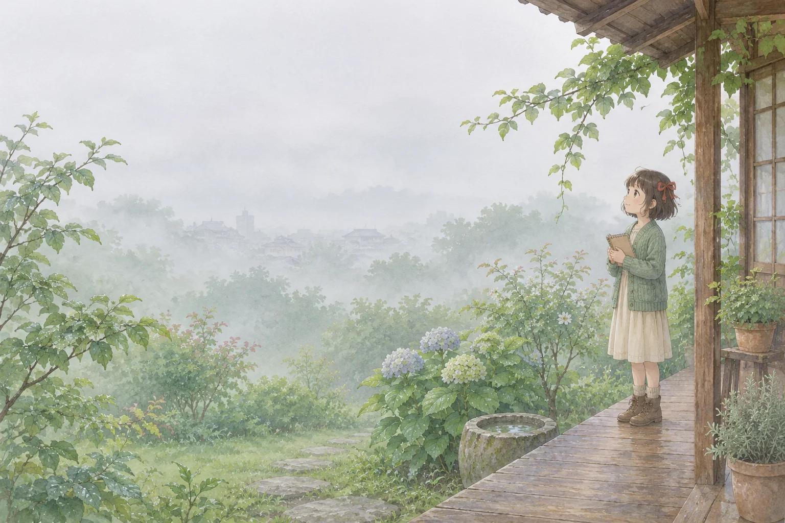

A walk by the water
Warm-weather clothes · riverside park
Illustration and motion studies, not live forecasts. The first collection explores warm and cool clothing, sheltered weather scenes and changing light. Animation moves the atmosphere; the character stays still.
Warm-weather clothes · riverside park
Cardigan and boots · garden picnic
Warm coat and mittens · gentle snow
Warm-weather cotton clothes · Kolkata-inspired veranda
Cardigan and boots · town garden
Light layers · sheltered veranda

Coat and scarf · sheltered café
Warm coat · snowy city window
Light layers · warm evening

Cardigan and scarf · cool evening

Cardigan · sheltered garden